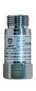
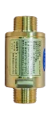
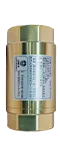
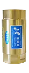
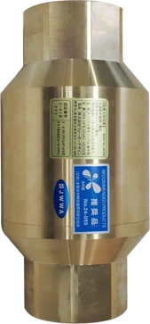

ABOUT UFB DUAL
水槽単位ではなく、施設の水インフラとして組み込む。
TECHNOLOGY
水圧駆動の配管直結型ノズル。
UFB DUALは、設備配管に設置し、下流側で使う水をウルトラファインバブル水として活用するための装置です。
外部電源やフィルターを必要としない構造のため、既存配管や新設ラインに組み込みやすく、陸上養殖、水産施設、活魚水槽、加工場の水まわり改善に活用できます。効果や適用範囲は、水量、圧力、魚種、設備条件により異なるため、現場ごとの設計が必要です。
- 外部電源を使わない水圧駆動
- 13Aから50Aまでの標準ラインナップ
- 100Aの大型口径、海水、温泉、薬剤対応仕様も受注生産で検討可能
PRODUCT DETAIL
口径・素材・設置位置を、施設条件から決める。
UFB DUALは単体の装置選定だけでなく、配管口径、ポンプ能力、ストレーナー、バイパス配管、メンテナンス導線まで含めて検討します。
口径別ラインナップ
← スワイプ／スクロールで全モデル →

UFB DUAL® 13A
- 認証番号
- (JET) W077-11004-237
- 外形全長
- 56mm
- 重量
- 130g
- 接続
- G1/2
- 材質
- 鉛フリー快削黄銅、POM、SUS304、NBR

UFB DUAL® 20A
- 認証番号
- (JWWA) Z-418
- 外形全長
- 92mm
- 重量
- 545g
- 接続
- テーパーネジ R3/4
- 材質
- 鉛フリー快削黄銅、SUS304、POM

UFB DUAL® 25A
- 認証番号
- (JWWA) Z-418
- 外形全長
- 104mm
- 重量
- 1,050g
- 接続
- テーパー RC1
- 材質
- 鉛フリー快削黄銅、SUS304、POM

UFB DUAL® 40A
- 認証番号
- (JET) W077-11004-237
- 外形全長
- 140mm
- 重量
- 2,800g
- 接続
- テーパー RC1-1/2
- 材質
- 鉛フリー快削黄銅、SUS304、POM

UFB DUAL® 50A
- 認証番号
- (JWWA) Z-418
- 外形全長
- 217.5mm
- 重量
- 7,500g
- 接続
- テーパー RC1-1/2
- 材質
- 鉛フリー快削黄銅、SUS304、POM
UFB DUAL® 100A
- 対応
- 海水・温泉・薬剤など特殊環境
- 設置
- 大元配管・主要ライン
- 供給
- 受注生産（現場条件で個別設計）
- 実績
- 椿泊漁港 荷さばき所 導入
※ 13A〜50Aは標準ラインナップ。100Aの大型口径・海水／温泉／薬剤対応は受注生産です。
水産施設で使いやすい理由。
水産施設では、複数の水槽や洗浄ラインに同じ水源から水を送るケースがあります。UFB DUALは大元配管や主要ラインに設置することで、下流側の使用ポイントへUFB水を届ける設計ができます。
主な組み込み先
- 補給水ライン
施設へ入る水の入口側で、流量、圧力、素材条件を確認して組み込みます。
- 循環ライン
ろ過、殺菌、酸素供給と干渉しない位置を確認し、水質管理の一部として検討します。
- 洗浄ライン
床、器具、配管、排水まわりの洗浄水として、清掃負担の軽減を目指します。
- 海水供給ライン
塩分、流量、温度、腐食条件を踏まえ、海水対応仕様や周辺部材を検討します。
TOKUSHIMA CASE
椿泊漁港では、100A海水対応仕様を大元配管へ。
徳島県阿南市の椿泊漁港 荷さばき所では、海水供給システムの設備として、UFB DUAL 100A海水対応仕様が採用されています。活魚水槽や洗浄ラインなど、複数の海水使用ポイントへ供給する水インフラの一部として設置されました。
導入事例を見るFAQ
よくある質問
既存設備を置き換える装置ですか？
置き換えではなく、ろ過、酸素供給、洗浄、配管設計を補完する水インフラ技術として検討します。
導入前に必要な情報は何ですか？
施設種別、魚種、水量、水槽数、海水・淡水・汽水、配管口径、ポンプ能力、既存設備、現在の課題があると検討しやすくなります。
効果はどの施設でも同じですか？
効果や運用方法は条件により異なります。魚種、水質、流量、既存設備を確認したうえで、個別設計が必要です。